Brain-Computer Interfaces
Dalle interfacce neurali al controllo dello smartphone con gli occhi
Davide Valeriani
BCI-NE Laboratory
University of Essex
| 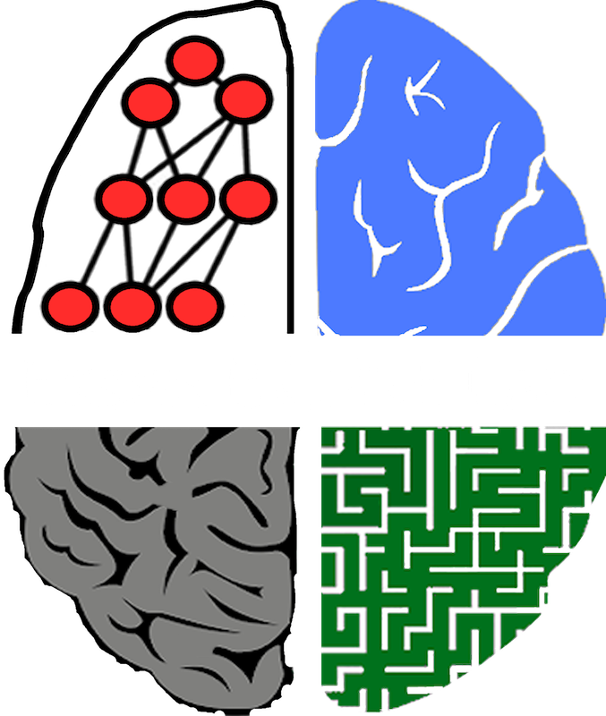 | 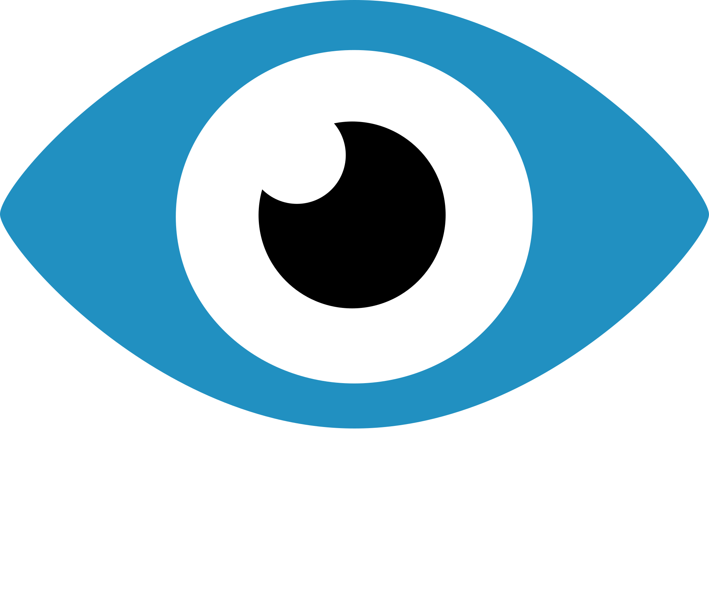 |
Brain-Computer Interfaces
o "Interfacce neurali"
Interfacce che permettono all'utente di controllare altri dispositivi con il solo uso della mente.
Nate per aiutare le persone affette da disabilità a comunicare.
Cervello umano
Oltre 80 miliardi di neuroni interconnessi.
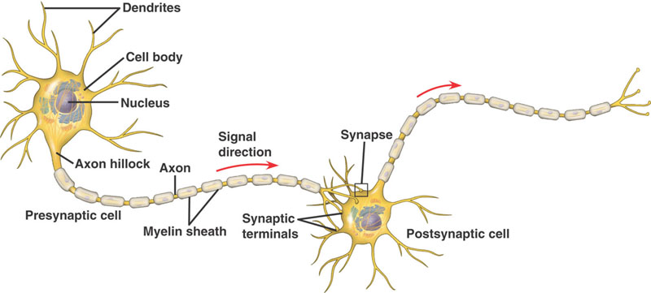Event-related potentials
Reazione del cervello al verificarsi di un evento.
Vari ERPs conosciuti: P300 il più usato in BCI.
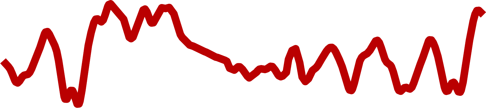 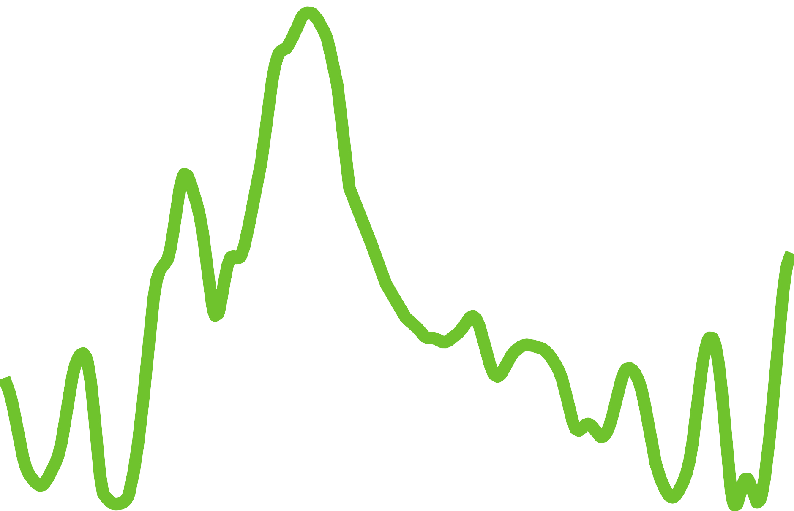Come funzionano?
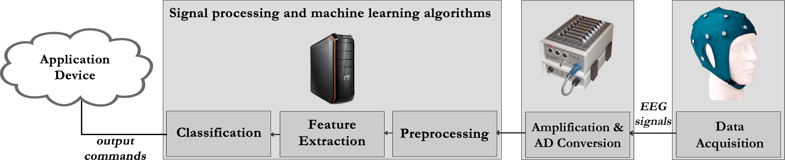Elettroencefalografia (EEG)
Metodo non invasivo più utilizzato per acquisire i segnali cerebrali.
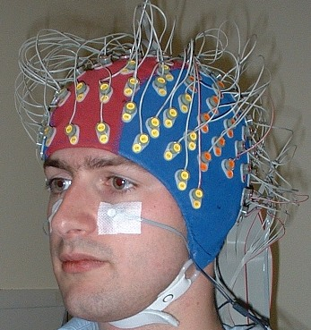 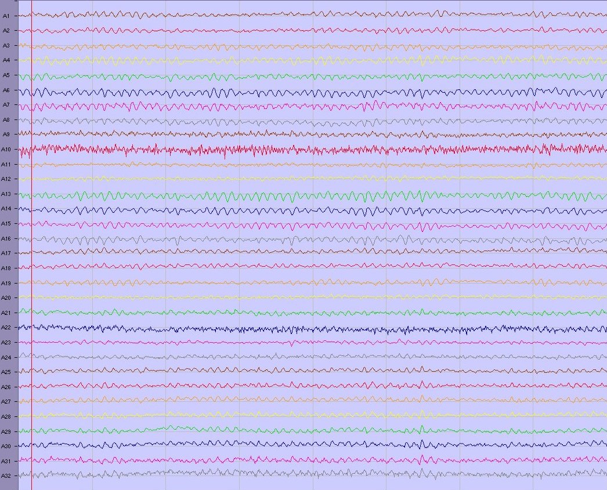Rumore
- Sovrapposizione di ERPs e altri processi mentali
- Rumore di acquisizione
Esempio di esperimento
Dove si usano
- Comunicazione: mouse e tastiera controllati con la mente
- Controllo: sedia a rotelle comandata con la mente
- Decisioni: ridurre gli errori in situazioni critiche
- Videogiochi: controllo completo o complementare
BCI Speller

BCI Mouse
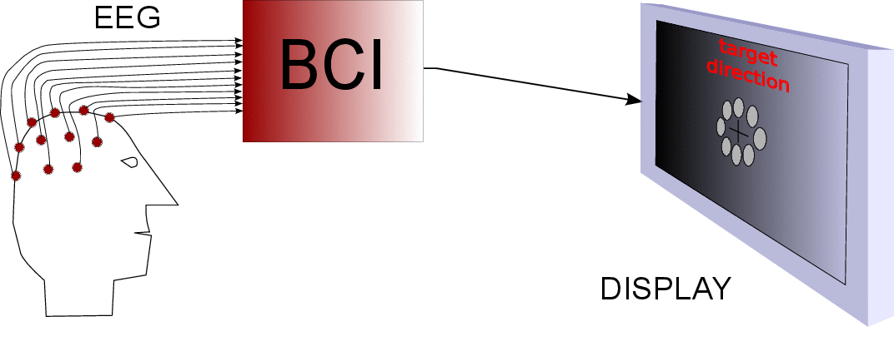BCI Wheelchair

BCI per le decisioni
- Gruppi usati per prendere decisioni critiche in vari campi
- Usare i segnali neurali per stimare la confidenza
- Pesare le risposte dei singoli sulla base della confidenza
- Applicazioni in finanza, medicina e difesa
BCI per le decisioni (cont.)
- Machine learning per stimare la confidenza
- Correttezza nella risposta usata per addestramento
- Risposta giusta = utente sicuro
Risposta sbagliata = utente insicuro
Facciamo una prova
- Tra poco vedrete un'immagine.
- Siamo al circolo polare artico, quindi ci saranno tanti pinguini.
- Il vostro obiettivo è trovare, se c'è, un orso polare.
P.S. avete 250 ms a disposizione
Pronti?
In quanti hanno visto un orso?
In quanti hanno visto un orso?

Risultati della BCI
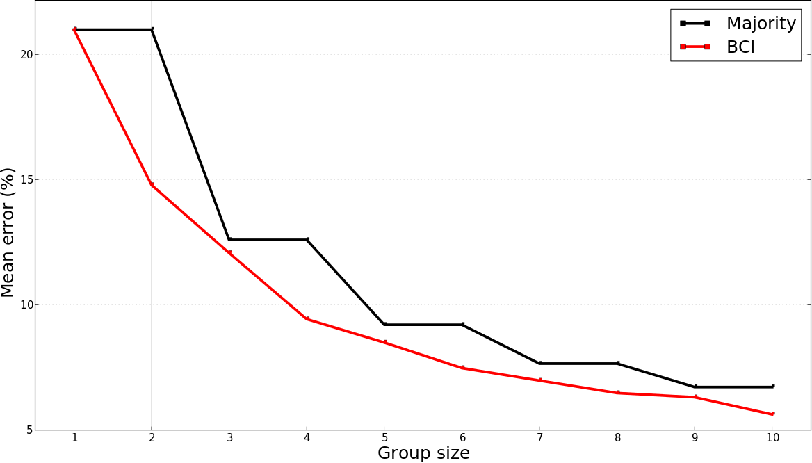D. Valeriani, R. Poli, C. Cinel, "A Collaborative Brain-Computer Interface for Improving Group Detection of Visual Targets in Complex Natural Environments," 7th International IEEE/EMBS Conference on Neural Engineering (NER), 2015.
Diversi esperimenti
Sistema messo alla prova con diversi task:
- Visual matching [1]
- Visual search con stimoli artificiali [2]
- Visual search con stimoli realistici [3]
- Riconoscimento di parole in registrazioni audio [4]
Futuro → riconoscimento facce
[1] R. Poli, D. Valeriani, C. Cinel, "Collaborative Brain-Computer Interface for Aiding Decision-making," PLoS One, vol. 9, no.7, Jul. 2014.
[2] D. Valeriani, R. Poli, C. Cinel, "A Collaborative Brain-Computer Interface to Improve Human Performance in a Visual Search Task," 7th International IEEE/EMBS Conference on Neural Engineering (NER), 2015.
[3] D. Valeriani, R. Poli, C. Cinel, "A Collaborative Brain-Computer Interface for Improving Group Detection of Visual Targets in Complex Natural Environments," 7th International IEEE/EMBS Conference on Neural Engineering (NER), 2015.
[4] D. Valeriani, R. Poli, C. Cinel, "Improving Speech Perception with Collaborative Brain-Computer Interfaces," 38th Annual International Conference of the IEEE EMBS, 2016.
Visual matching
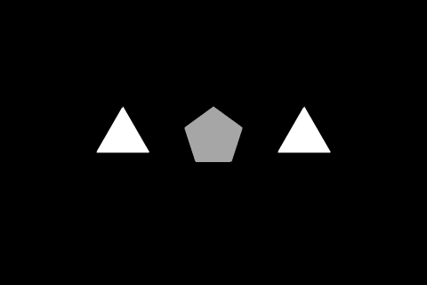 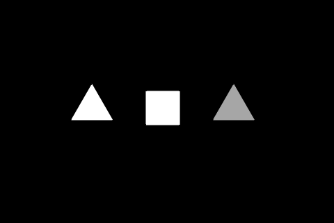Visual search
Stimoli artificiali
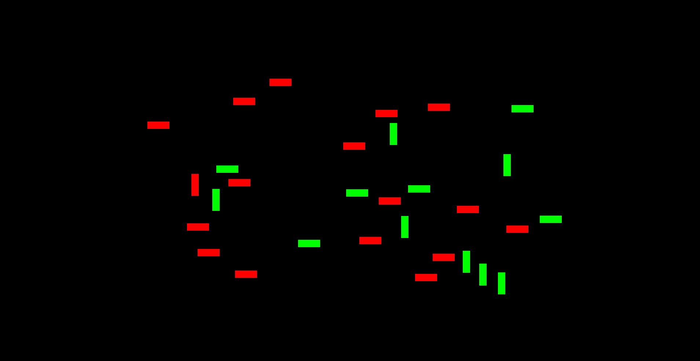
Visual search
Stimoli realistici
Riconoscimento parole
Hai sentito una di queste parole?
- Route
- Lookout
- Village
- Grid
- Check
- Trucks
- Side
Cybathlon 2016
Competizione internazionale per paratleti supportati dalla tecnologia: 8 ottobre 2016
Il videogioco
- Avatar che corre su un tracciato
- Piattaforme di quattro colori sparse sulla pista
- Ad ogni piattaforma corrisponde un comando diverso
- Salta (viola)
- Corri (blu)
- Rotola (gialla)
- Riposati (grigia) 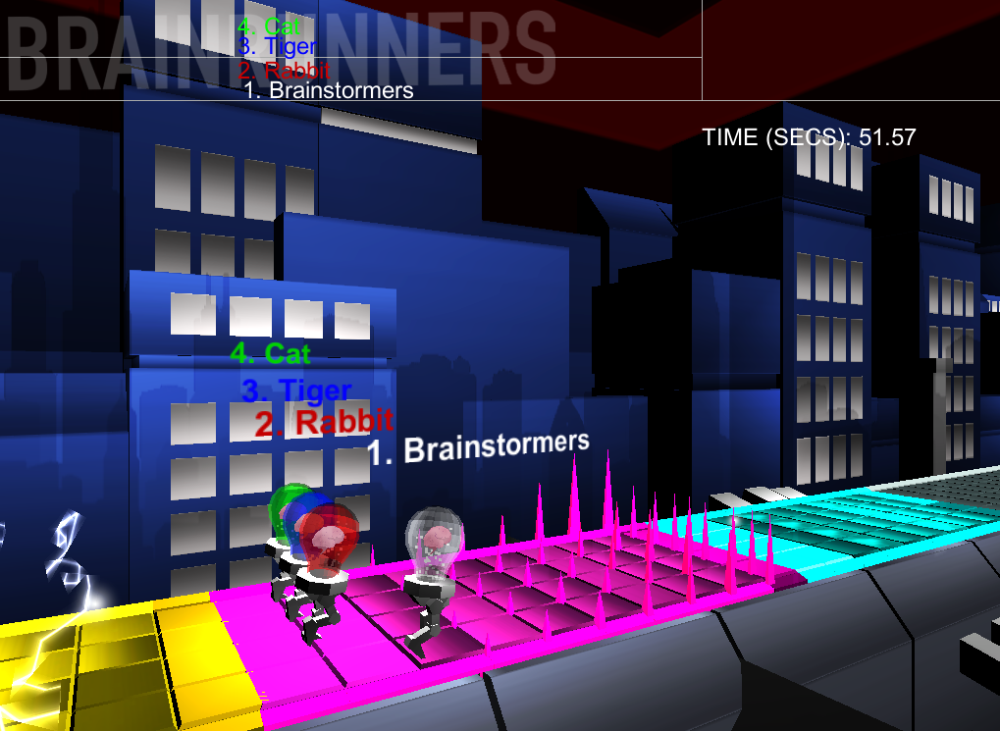
Configurazione della BCI
Comandi associati a diversi processi mentali
- Salta → Immagina di muovere le gambe
- Corri → Fai un calcolo mentale
- Rotola → Immagina di sentire un telefono squillare
- Riposati → Non pensare a nulla
Siete pronti a provare?
- Useremo l'Emotiv Epoc, dispositivo commerciale "low-cost" 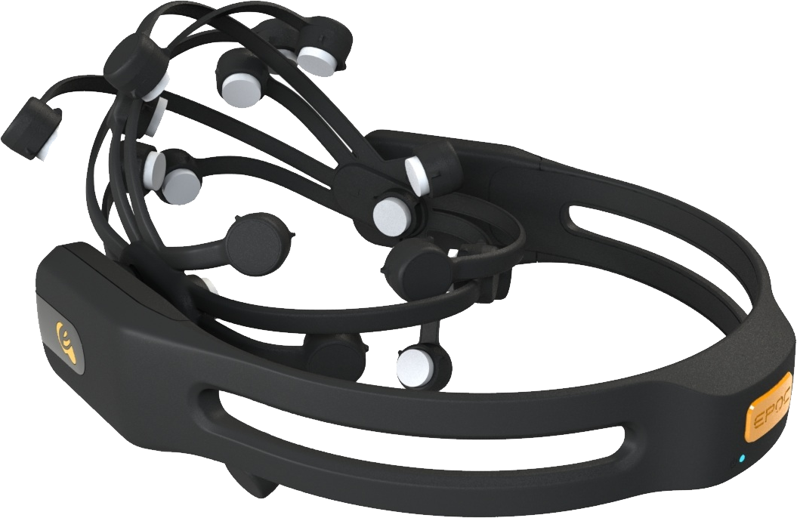
- Elettrodi bagnati con acqua e sale
- Per semplificare, non useremo il comando "rotola" (telefono)
- Non aspettatevi risultati strabilianti: è low-cost
Volontari?
EyeWink
Dispositivo per controllare lo smartphone con gli occhi
- Sensori sulla fronte per rilevare movimenti oculari
- Connessione allo smartphone via Bluetooth Low Energy
- App per configurare il dispositivo
D. Valeriani and A. Matran-Fernandez, "Towards a wearable device for controlling a smartphone with eye winks," Computer Science and Electronic Engineering Conference (CEEC), 2015.
Movimenti oculari
Esempi di segnali registrati per nessuna attività, occhiolino sinistro e occhiolino destro
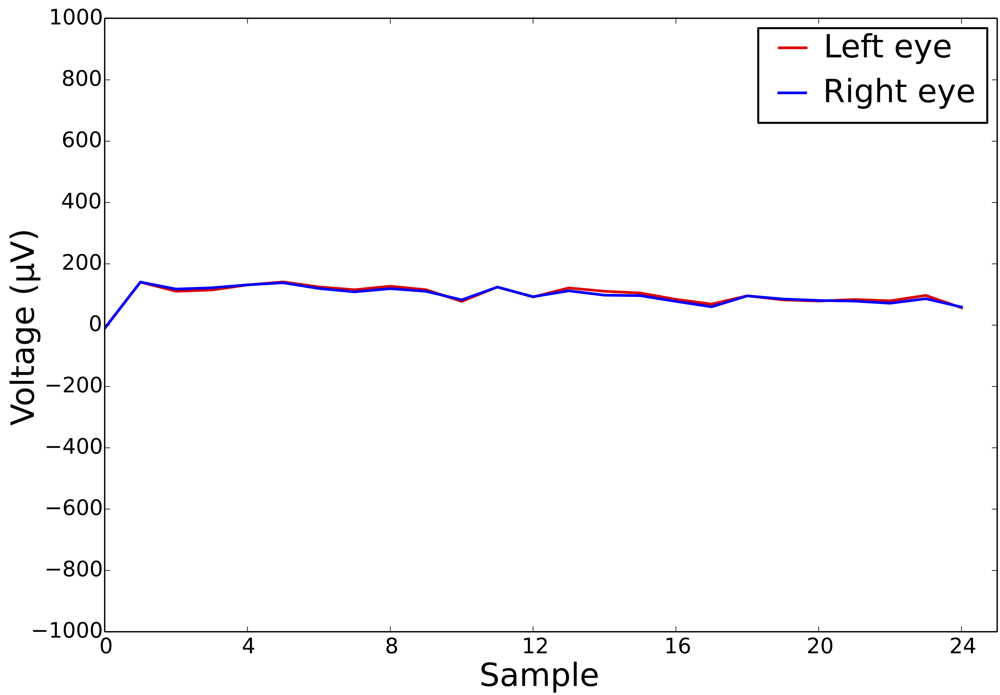 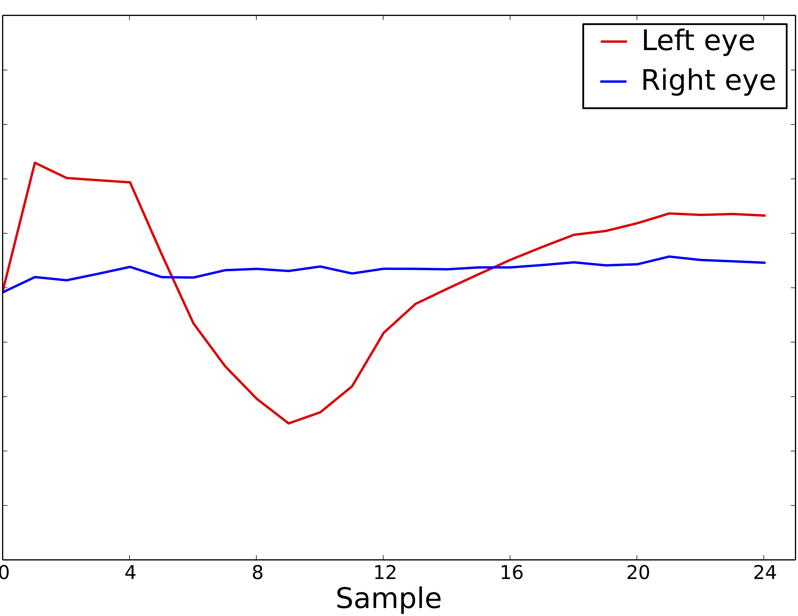 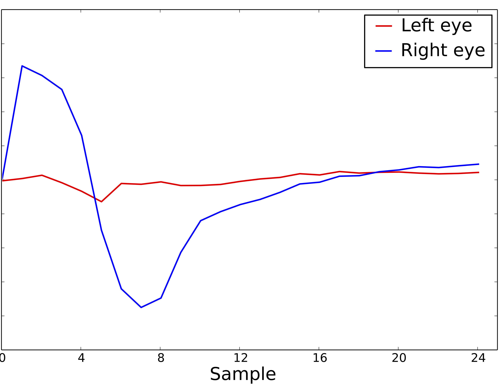D. Valeriani and A. Matran-Fernandez, "Towards a wearable device for controlling a smartphone with eye winks," Computer Science and Electronic Engineering Conference (CEEC), 2015.
EyeWink in azione
Startup
- Idea vincente di HackTheBrain UK (marzo 2015)
- Presentazione al London Science Museum in aprile 2015
- Campagna di crowdfunding in novembre 2015 (£ 4605)
- Nascita di EyeWink Ltd in dicembre 2015
- Lancio sul mercato entro l'anno
- Visitate eyewink.net e seguiteci sui social!
That's all folks!
Domande?
Nel caso ve ne venissero altre in futuro, contattatemi:
- Email: davide.valeriani@gmail.com
- Web: www.davidevaleriani.it
- Facebook, Twitter, LinkedIn, etc.